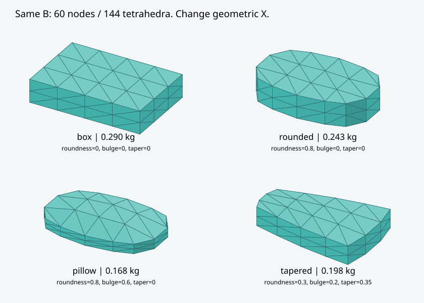

先看对比 · 同外袋，书本 / 衣物
同一外袋、相同堆形和抓点。书本单次成功，衣物完整运行但抬升不足；当前结果仍受接触步长影响。
PHYSICS × DEFORMABLE MANIPULATION
01 / BAGGED OBJECTS
完整 YAM 机械臂从快递堆中夹取外袋与内部物体。整机与近景同时展示，0.5 倍速播放，末帧停留 2 秒。
同一外袋、相同堆形和抓点。书本单次成功，衣物完整运行但抬升不足；当前结果仍受接触步长影响。
低堆顶上方夹取，抬升约 103 mm、搬运约 99 mm。0.2 ms 步长下完成；0.1 ms 对照穿透超限，尚未通过步长稳定性验证。
原双指夹袋接触丢失，后期主要挂持、夹住局部折膜。搬运约 100 mm，抬升约 55 mm，未达到 100 mm 标准。
低堆顶上方接近。合拢时纸张与外壳穿透达到 0.15077 mm，超过本轮门槛，仿真停止。
高堆空隙侧向接近，合拢 3 秒后仍未建立稳定双指夹持，未进入抬升。与上方试抓的支撑条件不同。
以上均为现有试次的仿真回放；外袋与内容物尚未实物标定，包含失败片段。实验结果与模型说明 ↗ · 视频来源与播放说明 ↗
02 / PHYSICAL REPRESENTATIONS
从分段刚体到体积连续体，比较材料、形状与接触对整体响应的影响。
把物体分成若干刚体块，块之间通过平移、转动弹性连接、原生阻尼和几何限位传力。硬物可合并为单刚体；易弯、易压物保留多个段。
旧方案包括围压门控的压密连接；顶面抓取还可开启辅助捏取规则。视频中的 辅助捏取=1 表示启用了该规则。
代表规模：易弯 36 段、易压 48 段。MuJoCo / MJWarp 3.17，步长 0.4 ms；GPU 材料算子沿用 float64 实现。
分段模型源码 ↗原模板为60个顶点、144个四面体，采用MuJoCo 4原生full 3D StVK与塑性。大枕头新模板增加到189个顶点、576个四面体，并试用实验性Stable Neo-Hookean材料（SNH）。不同网格或本构属于不同模板B，旧验收不能直接沿用。
同一B内，通过材料与形状X改变弹性模量、泊松比、阻尼、屈服、密度、摩擦、尺寸、圆润度和鼓包；连接拓扑保持固定。枕头实际质量按网格体积校正为0.29 kg。
MuJoCo / MJWarp 4.0，GPU Newton，步长0.5 ms；不加压密、关闭自碰撞。GPU保存完整塑性历史，不用CPU动力学或CG回退。SNH完整模型保存为MJB。
连续体模型源码 ↗
目前只支持单个连通实心体，未接入独立袋膜；任意拓扑、实物材料标定、目标整体响应到材料参数的换算表尚未完成。节点集中质量沿用原生 flexcomp，不能把它当作已标定的均匀密度有限元质量分布。
“硬物 / 易弯 / 易压”是探索预设名称，两种建模方法还没有标定成相同的整体响应。
03 / MODEL IN MOTION
回看提起、搬运和失夹的过程。成功样本与失败片段一起保留，结论对应具体配置。
240×160×50 mm、0.29 kg、E=5 kPa，189节点/576四面体。全景与近景保留机械臂，隐藏外边界显示面，仅绘制实际体积网格；物理体积与接触保留。
GPU Newton、原生接触、辅助捏取=0。真实轨迹7.94秒，数值与几何未失效，但提起时失夹。不是成功录像，也没有用动画补造后续动作。
相同尺寸、质量、E=5 kPa与576四面体。隐藏外表面，原速播放；4.37秒在合拢阶段发生局部翻转，几何检查停止。
与左片同一轨迹，只改变显示方式；外表面是体积边界的渲染，不是另外加入的物理薄膜。
15.03 秒完成提起、搬运、放下与松开，辅助捏取=0。120×45×50 mm、40.5 g、E=100 kPa、ν=0.1、屈服=0.2；本次 plastic=0，表现为弹性响应。
无翻转/溢出/警告，最小 J=0.760，穿透峰 0.883 mm；机械臂跟踪峰 40.6 mm 仍需改进。只是一例未标定参数演示，未重复测试。
120×50×50 mm、E=10 kPa，原生接触。3.665 秒发生局部翻转，仿真停止。原始失败结果保留。
诊断回放末段真实保存状态，红色标出第一失败单元。慢放与停帧已注明，不代表新增物理步进。
用户自调软参数，GPU Newton，原生接触。5.414 秒失夹，之后保持终止控制目标继续真实仿真观察至 10 秒；黄色标签区分观察段。没有把失夹改成成功。
CPU 源轨迹，完成一次提起、搬运、放下和松开。含辅助捏取规则。
分段易弯 / CPU 与连续体 hard / GPU；材料未匹配。分别在 9.586 / 8.244 秒失夹，停止画面已标注。
视频从保存状态回放，采样之间仅作显示插值；渲染使用 CPU Mesa，视频播放速度不代表求解速度。
04 / EXPERIMENTS & EVIDENCE
分别记录构建有效性、物理有效性与抓取结果，每个数字都对应具体实验。
| 实验 | 实际结果 | 能说明什么 |
|---|---|---|
| 三材料 × 四形状构建 | 12/12 构建通过；24 个随机形状合法；8 个非法输入被拒绝 | 固定拓扑可以改变真实体积形状；合法参数不等于动态稳定。 |
| 相同剪切初态的恢复力 | hard / bendable / compressible：22.33 / 2.32 / 0.80 N | 三个预设有不同材料响应；这是恢复力范数，不是整体刚度标定。 |
| 塑性与完整状态 | 初版释放实验有残余塑性；双 world 隔离及状态重放曾通过。当前精化版复测被略超 10⁻⁵ 的残差拦截。 | 塑性历史必须随完整 integration state 保存；旧版通过不能替代当前版本验收。 |
| 统一 YAM 抓取 | 新窄实体原生接触完整 success，15.026 s 原宽硬盒失夹、初始软形状塑性非有限；新 E=10 kPa 窄实体下压翻转 | 成功例为 120×45×50 mm、40.5 g、E=100 kPa，本次未屈服；不能外推到原大物体或随机 κ。 |
| 大软枕头 · E=5 kPa | 240×160×50 mm、0.29 kg：StVK/ν=.3在4.371秒翻转；ν=.45在3.312秒塑性非有限；SNH/ν=.3在7.939秒提起失夹 | SNH这次无翻转、溢出或警告，J最小0.433，穿透峰0.354 mm；数值有效仍不等于抓取成功。各候选一次，非成功率测试。 |
| 24 组 κ · 纯 GPU 常驻 | 1 world：19/24 组有效；32 worlds：13/24 组有效 | 通过组各重复 3 次、每次推进 1 秒；失败组保留并排除出有效速度统计。 |
| 调参界面与视频 | 可调整形状、材料和姿态后运行原 YAM 协议；连续体新增真实 10 秒视频 | GPU 动力学、CPU 画图。5.414 秒失夹后，视频继续观察至 10 秒，失夹判定保留。 |
同一台 RTX 5090、相同尺寸质量、完整 YAM 初始控制保持、无界面绘图与逐步状态读回。分段 0.4 ms 需要 2,500 步；连续体 0.5 ms 需要 2,000 步。
| 代表预设 | 分段 · 1 world | 连续体 · 1 world | 分段 · 32 worlds | 连续体 · 32 worlds |
|---|---|---|---|---|
| hard / box | 0.900 s * | 4.998 s | 0.977 s * | 7.976 s |
| bendable / box | 8.651 s * | 3.335 s | 10.384 s * | 4.938 s |
| compressible / box | 13.005 s * | 3.052 s | 15.478 s * | 非有限，拒绝测速 |
* 分段六组均触发线搜索上限警告，上表是保留无效标记的诊断成本。32 worlds 表示整批各推进 1 秒的总耗时。模型版本、积分器、自由度与材料响应不同，不能当作等精度或普遍加速倍数，也不是完整抓取吞吐。
24 组 κ 中，有效组的单环境中位速度为 588 step/s；32 并行合计中位为 9,162 world-step/s。失败组没有混入这些数字。
05 / OPEN QUESTIONS
接触异常、夹持失稳与求解失败，界定了当前模型的使用边界。
新SNH候选保持大尺寸与E=5 kPa，夹爪闭到接近零间隙，夹持峰仅1.57 N；提起后双指接触丢失，枕头留在桌上。当前抓点和动作未形成可持续承载的局部夹持，不能通过缩小物体或提高刚度把它改称大软枕头成功。
局部四面体被压扁到零体积，顶点随后穿过对面，相对初态的有符号体积比 J 变成负数。单元的方向反了，继续计算可能产生异常力、穿透、反弹或数值发散。
窄实体 E=10 kPa 的新例在 3.665 秒翻转，单元 #43 的 J=-0.000772；当时数值仍有限、残差也在门槛内，几何却已经失效，所以独立停止。J>0 只是必要条件，也不能代替材料和接触验收。
某些 κ 单环境能跑，32 个 world 中仍可能有个别 world 失效。当前保留完整失败状态、原始溢出与残差，不用其余 world 的平均值掩盖失败；根因尚未确认。
保持 10⁻⁵ 门槛。最多两次同方程 GPU 精化能改善一些情况，但仍记录到 1.00081×10⁻⁵、1.00122×10⁻⁵ 的失败，没有放宽标准。
分段辅助捏取片可以完成一次搬运，不能用它证明纯接触成功。两模型原生接触片均保留真实失夹结果；材料、姿态、控制跟踪和接触承载仍需分别排查。
诊断中的位置与速度有限，但原始警告位为 LS_ITERATIONS。保留 valid=false，未把带警告运行当作有效吞吐；没有为追求速度修改材料或求解器预算。
还需要定位首次塑性失效、验证长时程接触和参数适用范围、做实物响应标定，并完成可靠的批量抓取。当前只确认已执行的构建、短材料实验、部分有效 GPU 参数组和视频回放。
06 / EXPLORE FURTHER
回到实验协议、原始数据与可复现的源码。